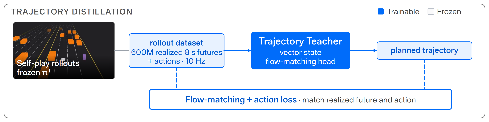
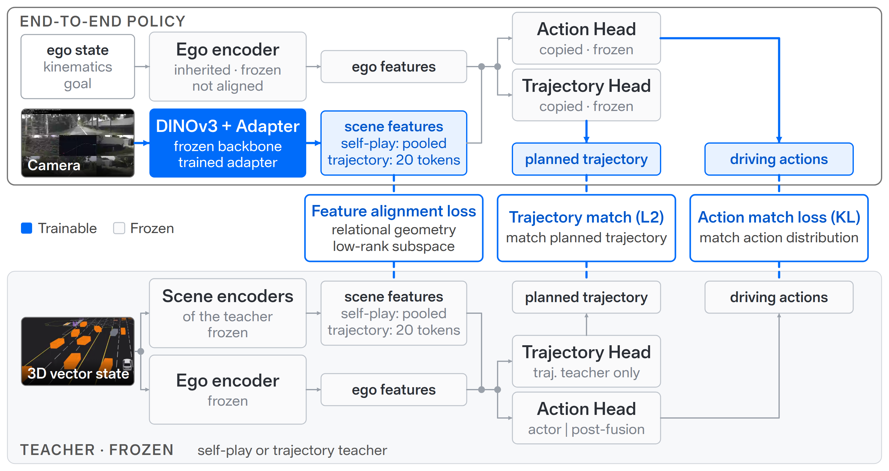
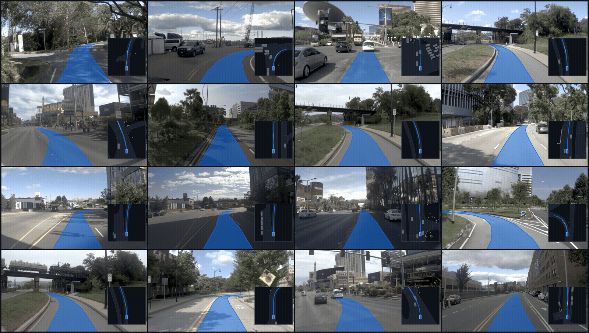
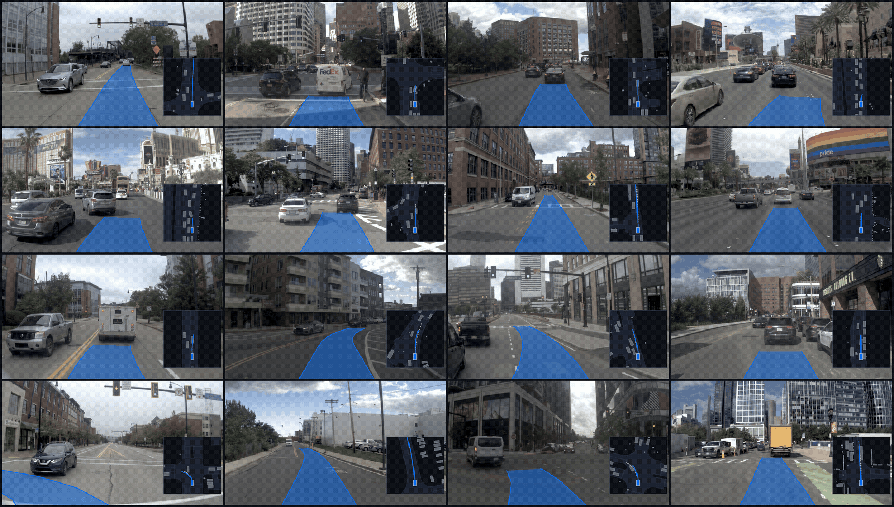
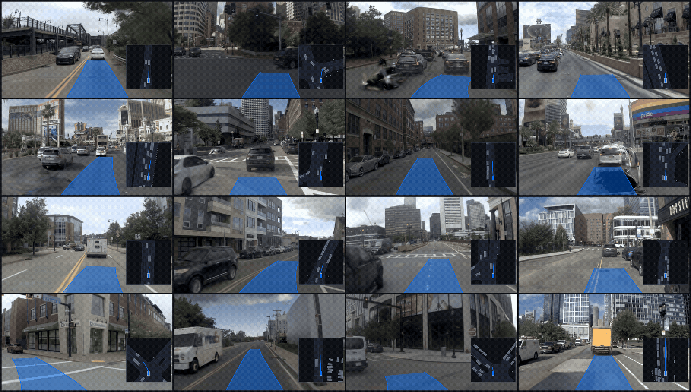
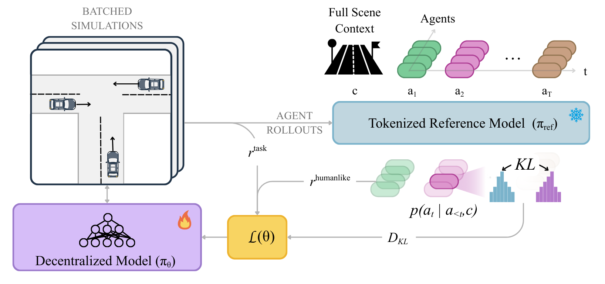

Applied Intuition · Technical Report
TerraTransfer++:
Demonstration-Free End-to-End Planner
Learn to drive by self-play in a vectorized simulator, learn to plan by trajectory distillation from a flow-matching teacher, then learn to see by aligning a vision student to either frozen teacher — no human demonstrations at any stage.
- Fast, feature-rich driving simulation via self-play
- 2.8M steps/s on an 8× server node
- State‑of‑the‑art driving performance (94.19 on nuPlan val14, 70.87 on InterPlan)
- First of its kind: brings a self-play policy into E2E driving by learning to see via image-to-vector encoder alignment
- Driving policies learnt from 1.5B+ miles / 2,535 years of experience in self-play
- State-of-the-art closed-loop E2E driving performance (0.490 HD‑Score on HUGSim)
Oct 2026 · This work
TerraTransfer++
Learn to plan in long horizon for TerraTransfer
- Planning capability distilled from self-play rollout experience
- State‑of‑the‑art open-loop and closed-loop E2E driving performance (59.4 EPDMS on navhard, 95.5 PDMS on navtest, 0.548 HD‑Score on HUGSim)
Philosophy
Decouple learning to drive and plan
from learning to see
Master driving first by self-play in a fast vectorized simulator, turn its rollouts into a trajectory planner — then let the agent see, by aligning a vision frontend to the skills it already has.
navhard (59.4 EPDMS), navtest (95.5 PDMS), and HUGSim (0.548 HD-Score)Full abstract
End-to-end autonomous driving has achieved state-of-the-art performance on benchmarks and
real-world deployments. Its standard training recipe, however, is expensive across all
existing paradigms: imitation learning requires fleet-scale driving logs whose behavior
distribution only thinly covers the safety-critical tail; closed-loop reinforcement learning
in a photorealistic simulator, while offering diverse behaviors, is bottlenecked by
sample-efficiency, per-step cost of rendering, and a forward pass through a large vision
backbone. Self-play in vectorized simulators changes the economics: at millions of rollout
steps per second, one can obtain a state distribution with natural diversity in collisions,
near-misses, and recoveries that no driving log contains, and a highly reactive policy
emerges from a basic driving-quality reward.
Our approach exploits this asymmetry by decoupling learning to drive and
learning to plan from learning to see. We pretrain a single policy by
self-play, distill its rollouts into a flow-matching trajectory teacher that also plans, and
train lightweight adapters on a frozen pretrained vision backbone to reproduce the latent
space of either teacher through the action Kullback-Leibler divergence, a batch-relational
low-rank structural loss, and, for the planner, a trajectory-matching loss. Every target
traces back to the self-play policy, so alignment never supervises against a logged
trajectory: a paired dataset of (image, scene-state) frames suffices, with no need for the
curated expert demonstrations that imitation pretraining is built on. From this one
self-play teacher we obtain two end-to-end students: a closed-loop policy that outperforms
every published imitation-based end-to-end method on the photorealistic 3D Gaussian
splatting closed-loop benchmark HUGSim, and a planner that reaches 59.4 EPDMS on NAVSIM
navhard, outperforming every published method including DriveZero-Scale (57.1), and
95.5 PDMS on navtest, without human demonstrations.
Method · Phase 1
Learn to drive — by self-play
One shared policy controls every agent in TerraZero, our vectorized simulator. Each agent observes its ego state, nearby road polylines and traffic controls, and neighboring agents. Trained with PPO, it learns from the long tail of its own behavior — collisions, near-misses, recoveries — never imitating a human.
Method · Phase 2
Learn to plan — distill self-play rollouts into a trajectory teacher
The self-play policy is frozen and its rollouts become a trajectory dataset: for every frame, the target is the policy’s own realized 8 s future, never a logged human trajectory. A flow-matching trajectory teacher learns these futures and actions from the same vector state, giving the self-play teacher a planning interface.

navhard and navtestMethod · Phase 3
Learn to see — align a vision student to either frozen teacher
A frozen DINOv3 backbone with trained adapters maps camera images into the teacher’s scene features, while the teacher’s heads are copied and frozen. Three losses tie student to teacher on paired (image, scene-state) frames: a feature alignment loss, an action KL loss, and, for the planner, a trajectory-matching loss. The self-play teacher yields the closed-loop student; the trajectory teacher yields the planning student. No logged trajectory is ever a target.

Results · HUGSim
Outperforms every published end-to-end baseline in closed loop
Closed-loop and native HD-Score on HUGSim — all 436 photorealistic 3D-Gaussian-splatting scenarios across four dataset splits (nuScenes 88, PandaSet 127, KITTI-360 113, Waymo 108), pooled over all scenarios.
The student retains roughly 97.5% of its privileged teacher’s closed-loop score and leads every baseline on the Easy, Medium, and Hard tiers and the All aggregate of every split. The exception is the Extreme tier, whose partly implausible adversarial scenarios reward never reacting; like its teacher, the student yields as a human driver would and sacrifices route completion.
Full per-split table (closed-loop and native HD-Score)
| Closed-loop HD-Score | Native HD-Score | |||||||||
|---|---|---|---|---|---|---|---|---|---|---|
| Method | Easy | Medium | Hard | Extreme | All | Easy | Medium | Hard | Extreme | All |
| nuScenes (88) | ||||||||||
| UniAD | 0.423 | 0.231 | 0.286 | 0.122 | 0.259 | 0.412 | 0.234 | 0.290 | 0.129 | 0.260 |
| VAD | 0.443 | 0.256 | 0.270 | 0.108 | 0.267 | 0.424 | 0.246 | 0.257 | 0.113 | 0.257 |
| LTF | 0.708 | 0.440 | 0.326 | 0.111 | 0.404 | 0.702 | 0.440 | 0.331 | 0.124 | 0.407 |
| ECO | 0.764 | 0.416 | 0.405 | 0.255 | 0.452 | 0.846 | 0.431 | 0.403 | 0.263 | 0.476 |
| Self-play teacher (ref., privileged state) | 0.906 | 0.684 | 0.685 | 0.279 | 0.647 | 0.875 | 0.657 | 0.653 | 0.250 | 0.618 |
| TerraTransfer++ student (ours) | 0.901 | 0.682 | 0.641 | 0.278 | 0.636 | 0.884 | 0.650 | 0.620 | 0.251 | 0.610 |
| PandaSet (127) | ||||||||||
| UniAD | 0.577 | 0.380 | 0.235 | 0.125 | 0.295 | 0.576 | 0.384 | 0.242 | 0.135 | 0.301 |
| VAD | 0.477 | 0.305 | 0.192 | 0.108 | 0.241 | 0.467 | 0.303 | 0.191 | 0.113 | 0.241 |
| LTF | 0.882 | 0.376 | 0.208 | 0.085 | 0.311 | 0.877 | 0.386 | 0.219 | 0.097 | 0.323 |
| ECO | 0.884 | 0.639 | 0.174 | 0.247 | 0.446 | 0.876 | 0.470 | 0.044 | 0.156 | 0.326 |
| Self-play teacher (ref., privileged state) | 0.890 | 0.883 | 0.302 | 0.224 | 0.554 | 0.876 | 0.872 | 0.275 | 0.186 | 0.532 |
| TerraTransfer++ student (ours) | 0.892 | 0.871 | 0.353 | 0.234 | 0.565 | 0.882 | 0.855 | 0.324 | 0.189 | 0.539 |
| KITTI-360 (113) | ||||||||||
| UniAD | 0.231 | 0.101 | 0.079 | 0.024 | 0.106 | 0.232 | 0.107 | 0.082 | 0.028 | 0.110 |
| VAD | 0.084 | 0.068 | 0.075 | 0.026 | 0.063 | 0.079 | 0.063 | 0.071 | 0.029 | 0.061 |
| LTF | 0.175 | 0.071 | 0.066 | 0.026 | 0.082 | 0.181 | 0.076 | 0.075 | 0.033 | 0.088 |
| ECO | 0.530 | 0.432 | 0.126 | 0.108 | 0.310 | 0.501 | 0.282 | 0.019 | 0.008 | 0.205 |
| Self-play teacher (ref., privileged state) | 0.659 | 0.497 | 0.244 | 0.019 | 0.363 | 0.650 | 0.488 | 0.205 | 0.015 | 0.348 |
| TerraTransfer++ student (ours) | 0.550 | 0.457 | 0.219 | 0.017 | 0.321 | 0.535 | 0.450 | 0.195 | 0.014 | 0.309 |
| Waymo (108) | ||||||||||
| UniAD | 0.591 | 0.275 | 0.334 | 0.095 | 0.315 | 0.585 | 0.278 | 0.340 | 0.101 | 0.317 |
| VAD | 0.237 | 0.197 | 0.208 | 0.109 | 0.189 | 0.226 | 0.189 | 0.199 | 0.114 | 0.183 |
| LTF | 0.520 | 0.312 | 0.218 | 0.100 | 0.292 | 0.530 | 0.325 | 0.225 | 0.111 | 0.303 |
| ECO | 0.801 | 0.581 | 0.339 | 0.254 | 0.510 | 0.757 | 0.463 | 0.213 | 0.124 | 0.403 |
| Self-play teacher (ref., privileged state) | 0.924 | 0.854 | 0.817 | 0.115 | 0.710 | 0.912 | 0.847 | 0.777 | 0.102 | 0.694 |
| TerraTransfer++ student (ours) | 0.941 | 0.836 | 0.758 | 0.116 | 0.695 | 0.936 | 0.827 | 0.717 | 0.100 | 0.679 |
Plan Visualization
What the camera-only planner plans
Plans of the camera-only trajectory student on NAVSIM, 16 scenes per panel. The planned trajectory is drawn in blue on the front camera, with a bird’s-eye view inset.
navtest

navhard · Stage 1

navhard · Stage 2

Qualitative Rollouts
Naturalistic driving across the long tail
Closed-loop HUGSim rollouts of the camera-only TerraTransfer++ student, two scenarios per dataset, shown through the three front cameras.
nuScenes
PandaSet
KITTI-360
Waymo Open Dataset
Terra Series
Procedural Driving Simulation for Self-Play RL at Scale
TerraZero is the vectorized simulator and self-play recipe behind Phase 1 of TerraTransfer++: a fast object-level traffic simulator, a procedural scenario generator, and a compute-efficient self-play recipe that trains driving policies from scratch — with zero human demonstrations — and transfers them across cities and datasets. Its frozen self-play policy is the teacher behind both students on this page.
Learning End-to-End Driving Policies Without Expert Demonstrations
TerraTransfer decouples learning to drive from learning to see: it pretrains a single policy by self-play in TerraZero, then aligns a pretrained vision backbone to that frozen policy’s latent space through an action KL divergence and a batch-relational low-rank structural loss. Alignment needs only paired (image, scene-state) frames, never a logged trajectory, and the resulting camera policy reaches 0.490 HD-Score on the photorealistic closed-loop benchmark HUGSim. TerraTransfer++ adds the learn-to-plan stage on top of this recipe.
Human-Like Simulation Agents via Self-Play Anchoring ICLR 2026
SPACeR anchors TerraZero's self-play RL to a pretrained tokenized reference model, making sim agents that are simultaneously human-like and reactive. The resulting policy is ~50× smaller than tokenized baselines with 10× faster inference, and outperforms prior self-play and imitation methods on the Waymo Sim Agents Challenge.
PPO
HR-PPO
SPACeR

BibTeX
Cite This Work
@article{xiong2026terratransferpp,
title = {TerraTransfer++: Demonstration-Free End-to-End Planner},
author = {Xiong, Zikang and Li, Weixin and Wu, Zhouchonghao and Rangesh, Akshay
and Bonde, Saarth and Hall, Grantland and Tang, Chen and Hu, Yihan and Zhan, Wei},
journal = {arXiv preprint arXiv:2610.30319},
year = {2026}
}